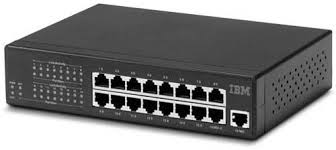
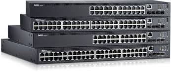
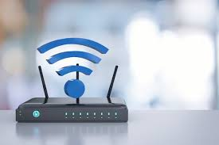
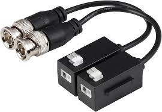

|  |
HUBUn hub es un dispositivo de red que conecta diferentes nodos de, por ejemplo, una red Ethernet con configuración en estrella. En el modelo de referencia OSI (Open Systems Interconnections), los hubs se clasifican como elementos de la capa 1 que operan en la capa física. Su principal cometido es conectar varios ordenadores entre sí y reenviar inmediatamente los datos recibidos El hub recibe datos y los hace llegar a todos los dispositivos que tiene conectados (hosts), lo hace transmitiendo en modo semidúplex (ambas direcciones, pero no a la misma vez). Todos los puertos (ports) del hub funcionan a la misma velocidad y se encuentran en un dominio de colisión (que incluye todos los dispositivos de red conectados). A diferencia de otros dispositivos de red, un hub no ofrece la opción de poder controlar o excluir a un receptor individual. De este modo, siempre que ocurre una transferencia de datos, todos los paquetes de datos se envían a la vez a todos los ordenadores. |
|  |
Los switches son piezas de construcción clave para cualquier red. Conectan varios dispositivos, como computadoras, access points inalámbricos, impresoras y servidores; en la misma red dentro de un edificio o campus. Un switch permite a los dispositivos conectados compartir información y comunicarse entre sí. |
|  |
Los routers guían y dirigen los datos de red mediante paquetes que contienen varios tipos de datos, como archivos, comunicaciones y transmisiones simples como interacciones web. Los paquetes de datos tienen varias capas o secciones; una de ellas transporta la información de identificación, como emisor, tipo de datos, tamaño y, aún más importante, la dirección IP (protocolo de Internet) de destino. El router lee esta capa, prioriza los datos y elige la mejor ruta para cada transmisión. |
|  |
Un transceptor, abreviatura de transmisor-receptor, desempeña un papel fundamental en las redes modernas, actuando como enlace esencial entre dispositivos de red. Este dispositivo compacto pero sofisticado actúa como intermediario entre conmutadores, enrutadores y cables, lo que permite una comunicación fluida en diversas configuraciones de red. Los transceptores desempeñan un papel fundamental en los ecosistemas de comunicaciones modernos. Su importancia va mucho más allá de las redes de fibra óptica; son componentes esenciales en innumerables sistemas, incluyendo redes de radio y conexiones Ethernet. Un transceptor funciona como un puente vital entre las señales eléctricas y ópticas, permitiendo la transmisión de datos sin interrupciones a través de cables de fibra óptica. Transmisor:El proceso se inicia cuando un dispositivo de red, como un conmutador o un enrutador, envía una señal eléctrica al transceptor. Dentro del transceptor, un diodo láser o LED emite luz al ser estimulado por una corriente eléctrica. Esta luz emitida se controla y modula meticulosamente, lo que permite codificar la información digital en una señal óptica Receptor:En el extremo receptor, otro transceptor o un fotodiodo detecta la señal óptica entrante. El fotodiodo absorbe la luz entrante, liberando electrones y generando una corriente eléctrica. Esta corriente representa fielmente los datos originales. Posteriormente, estos datos se transmiten al dispositivo receptor, como un servidor, lo que garantiza un flujo de información fluido. |